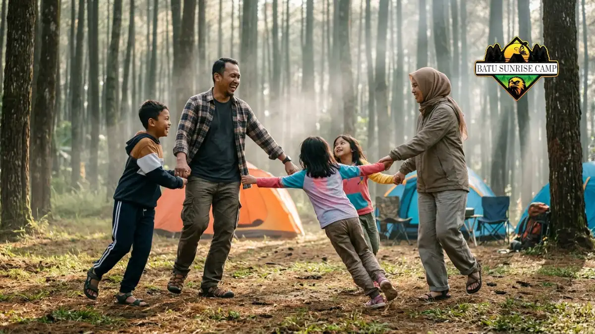

Fun games camping tanpa alat adalah kumpulan permainan sederhana yang hanya mengandalkan tubuh, suara, dan lingkungan sekitar untuk mengisi waktu camping agar lebih interaktif, aktif, dan mempererat kebersamaan.
Apa Itu Fun Games Camping dan Mengapa Penting?
Fun games camping adalah rangkaian permainan ringan yang dirancang untuk mengisi jeda waktu selama berkemah tanpa memerlukan perlengkapan tambahan selain yang sudah tersedia di lokasi.
Aktivitas semacam ini penting karena camping tidak hanya soal mendirikan tenda dan memasak, tetapi juga soal membangun interaksi sosial.
Tanpa kegiatan pengisi, peserta camping terutama anak-anak cenderung cepat bosan setelah aktivitas utama selesai. Permainan sederhana menjadi jembatan untuk menjaga energi kelompok tetap positif sepanjang acara.
Secara umum, tren wisata alam dan camping keluarga di Indonesia terus menunjukkan peningkatan setiap tahunnya, khususnya di kawasan dataran tinggi seperti Batu, Jawa Timur, yang dikenal dengan udara sejuk dan banyak pilihan lokasi camping ramah keluarga.
Peningkatan ini turut mendorong munculnya kebutuhan akan aktivitas pengisi yang praktis, seperti fun games tanpa alat.
Apa Saja Contoh Fun Games Camping Tanpa Alat?
Beberapa contoh fun games camping tanpa alat meliputi permainan berbasis gerak tubuh, tebak kata, dan kerja sama kelompok yang hanya membutuhkan ruang terbuka dan peserta.
Berikut beberapa contoh yang umum diterapkan:
- Estafet nama buah atau kota, di mana peserta menyebutkan nama secara bergiliran tanpa mengulang jawaban sebelumnya.
- Permainan tebak gerakan, satu peserta memperagakan aktivitas tertentu tanpa suara dan peserta lain menebaknya.
- Lomba membentuk formasi, misalnya membentuk huruf atau angka menggunakan tubuh secara berkelompok.
- Permainan "ular naga" versi modifikasi yang disesuaikan dengan jumlah peserta dewasa maupun anak-anak.
- Sesi bercerita berantai, di mana setiap peserta menambahkan satu kalimat untuk melanjutkan cerita sebelumnya.
Permainan-permainan ini dipilih karena mudah dijelaskan, tidak memerlukan persiapan rumit, dan bisa disesuaikan dengan kondisi lokasi camping, baik di area terbuka maupun sekitar tenda.
Bagaimana Cara Memandu Permainan Outbound Saat Camping?
Cara memandu permainan outbound saat camping dimulai dengan menjelaskan aturan secara singkat, memastikan area bermain aman, lalu memberikan contoh sebelum permainan dimulai.
Beberapa langkah praktis yang bisa diterapkan:
- Kumpulkan peserta di area terbuka yang cukup luas dan bebas dari hambatan seperti batu besar atau akar pohon.
- Jelaskan aturan permainan dengan bahasa sederhana, terutama jika ada anak-anak dalam kelompok.
- Bagi peserta menjadi kelompok kecil apabila jumlah peserta cukup banyak agar semua tetap terlibat aktif.
- Berikan contoh singkat sebelum permainan dimulai agar peserta memahami alur dengan jelas.
- Selipkan jeda istirahat di antara sesi permainan, terutama saat cuaca cukup terik atau peserta mulai lelah.
Pemandu atau koordinator kelompok sebaiknya juga fleksibel dalam mengubah aturan permainan apabila kondisi lokasi tidak memungkinkan, misalnya karena area yang tidak rata atau cuaca yang berubah.

Keluarga bermain outbound sederhana tanpa alat saat camping di alam terbuka.
Bagaimana Cara Memilih Permainan Sesuai Usia Peserta?
Cara memilih permainan sesuai usia peserta adalah dengan mempertimbangkan tingkat aktivitas fisik, kemampuan memahami instruksi, dan durasi konsentrasi masing-masing kelompok usia.
Untuk anak usia dini, permainan sebaiknya berdurasi singkat dan menggunakan instruksi visual atau gerakan sederhana.
Untuk anak usia sekolah, permainan berbasis kerja sama tim seperti estafet atau formasi kelompok lebih cocok karena mereka sudah mampu memahami aturan yang sedikit lebih kompleks.
Sementara untuk kelompok remaja dan dewasa, permainan yang melibatkan strategi ringan atau tantangan komunikasi biasanya lebih menarik dan tidak terasa monoton.
Menyesuaikan permainan dengan usia peserta juga membantu menghindari risiko cedera, terutama pada permainan yang melibatkan gerakan fisik aktif di area terbuka.
Apa Manfaat Fun Games Camping bagi Keluarga dan Kelompok?
Manfaat fun games camping bagi keluarga dan kelompok mencakup peningkatan kebersamaan, melatih kerja sama, serta menciptakan pengalaman camping yang lebih berkesan dibandingkan sekadar berdiam di tenda.
Beberapa manfaat lain yang umum dirasakan:
- Membantu anak-anak belajar berinteraksi dengan teman baru di lingkungan yang tidak formal.
- Mengurangi ketergantungan pada gawai selama kegiatan berlangsung.
- Memberikan pengalaman fisik aktif yang menyeimbangkan aktivitas duduk saat perjalanan menuju lokasi camping.
- Menciptakan momen kebersamaan yang dapat menjadi kenangan positif bagi keluarga.
Camping yang dilengkapi aktivitas semacam ini juga sering dianggap lebih bernilai edukatif dibandingkan camping yang hanya berfokus pada menginap semalam tanpa kegiatan tambahan.
Apa Saja Kesalahan Umum saat Menerapkan Fun Games Camping?
Kesalahan umum saat menerapkan fun games camping antara lain memilih permainan yang terlalu rumit, mengabaikan kondisi cuaca, dan tidak menyesuaikan durasi dengan stamina peserta.
Beberapa kesalahan yang sebaiknya dihindari:
- Memberikan instruksi terlalu panjang sehingga peserta kehilangan minat sebelum permainan dimulai.
- Memaksakan permainan di area yang tidak rata atau licin sehingga berisiko menyebabkan cedera ringan.
- Tidak menyediakan waktu istirahat yang cukup di antara sesi permainan.
- Mengabaikan preferensi peserta, misalnya memaksakan permainan fisik pada peserta yang lebih menyukai aktivitas tenang seperti bercerita.
Menghindari kesalahan ini dapat membuat sesi fun games berjalan lebih lancar dan tetap menyenangkan bagi seluruh peserta.
Tips Tambahan agar Fun Games Camping Lebih Berkesan
Tips tambahan agar fun games camping lebih berkesan meliputi menambahkan elemen edukasi ringan, memanfaatkan lokasi sekitar, dan mendokumentasikan momen permainan sebagai kenangan.
Beberapa tips praktis yang bisa diterapkan:
- Sisipkan sedikit unsur edukasi lingkungan, misalnya mengenalkan nama tumbuhan di sekitar lokasi saat permainan berlangsung.
- Manfaatkan pemandangan alam sebagai latar permainan, seperti area terbuka dengan latar pegunungan di kawasan Batu.
- Ajak peserta bergantian menjadi pemandu permainan agar semua merasa dilibatkan.
- Dokumentasikan momen bermain sebagai bagian dari kenangan camping keluarga.
Fun games camping akan terasa lebih bermakna apabila dikombinasikan dengan suasana lokasi, misalnya saat berkemah di area camping dengan nuansa hutan pinus atau taman bertema anak seperti yang banyak ditemukan di kawasan Batu, Jawa Timur.
Fun Games Camping dan Pilihan Lokasi di Batu
Menentukan fun games camping juga sebaiknya mempertimbangkan karakteristik lokasi, karena setiap tempat camping memiliki suasana dan fasilitas yang berbeda.
Sebagai perbandingan, Camping Hutan Pinus vs Camping Teletubbies Batu membahas perbedaan suasana kedua lokasi tersebut yang dapat memengaruhi jenis permainan yang paling cocok diterapkan.
Bagi keluarga yang berencana camping menggunakan kendaraan pribadi menuju lokasi, memilih moda transportasi juga menjadi pertimbangan penting.
Panduan Sewa Mobil Campervan Batu Lepas Kunci vs Plus Driver dapat membantu menentukan opsi yang sesuai dengan kebutuhan rombongan.
Selain permainan fisik, camping juga bisa dijadikan momen edukasi bagi anak. Artikel Wisata Edukasi Lingkungan saat Camping membahas cara mengenalkan kecintaan terhadap alam melalui aktivitas selama berkemah.
Kesimpulan
Fun games camping tanpa alat adalah cara efektif dan hemat biaya untuk membuat kegiatan berkemah lebih hidup, terutama bagi keluarga dengan anak-anak.
Kuncinya adalah memilih permainan yang sesuai usia, menjelaskan aturan secara sederhana, serta mempertimbangkan kondisi lokasi camping.
Dengan persiapan yang tepat, permainan sederhana ini dapat menciptakan pengalaman camping yang lebih berkesan tanpa memerlukan peralatan tambahan.